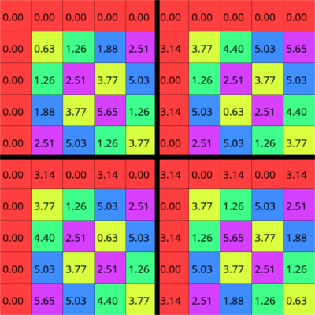

{{ title }}
In the previous part, we showed how we could build signals from sinusoids, and how to analyse built signals to get their components back. Inverting the matrix using Gaussian elimination showed to be really slow bu we could accelerate that using the easily invertible DFT matrix. Much faster, right? Multiplying an n by n matrix with an n long vector is an O(n^2) operation. With a 1 second long signal and a sample rate of 44100 Hz, that still means 1 944 810 000, almost two billion steps.
Going faster
Take a look at the DFT matrix defined before. Now instead of the powers of W, the angles in radians will be shown for each element.
Complex functions are oftben plotted with domain coloring but this is not the case now. From zero to π, the whole range of hues are covered with a bright saturation. From -π to zero (and π as well since -π is the same as π) the same range is covered buth with a slightly lower saturation. As result, points at the opposite side of the circle will share the same hue and they'll only differ in saturation.
With this way of coloring, you might notice a certain symmetry in the DFT matrices, especially if we make equalize the saturation for all terms and we choose an even sized matrix. Can we exploit this weird symmetry?
